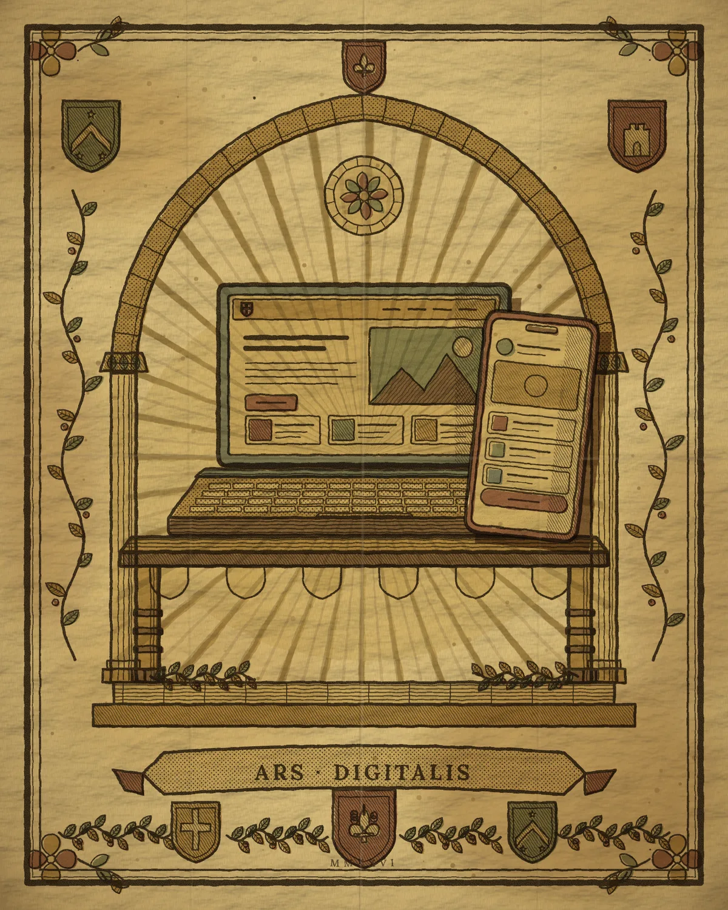

Portafolio UX/UI · 2026
Paz Fretes
Diseñadora de experiencias digitales
Interfaces claras, con identidad editorial y pensadas para web y mobile. Diseño sistemas visuales que se sienten elegantes y se usan sin esfuerzo.
Ver proyectos
Proyectos seleccionados
Seis productos digitales
Sobre mí
Diseño con intención
Soy diseñadora UX/UI y trabajo en la intersección entre investigación, estética y producto. Creo que una interfaz elegante también tiene que ser clara, accesible y consistente.
Combino pensamiento sistémico con un fuerte cuidado por el detalle tipográfico y visual.
Relevamiento y Análisis funcional
Encuestas, Entrevistas y Flujos.Diseño de interfaces
Web, mobile y responsive con jerarquía clara y composición editorial.Design Systems
Tokens, componentes y documentación listos para producto.Prototipado y pruebas
Flujos interactivos y validación con usuarios reales.
Proceso de diseño
Del problema a la solución
Descubrir
Investigación, benchmarks y entrevistas para entender el contexto.
Definir
Insights, objetivos y alcance con criterios de éxito claros.
Idear
Flujos, wireframes y exploración visual de alternativas.
Prototipar
UI de alta fidelidad con componentes y tokens del sistema.
Validar
Pruebas de usabilidad e iteración basada en evidencia.
Contacto
Hablemos
¿Tienes un proyecto en mente? Cuéntame sobre tu idea y diseñemos juntos una experiencia memorable.